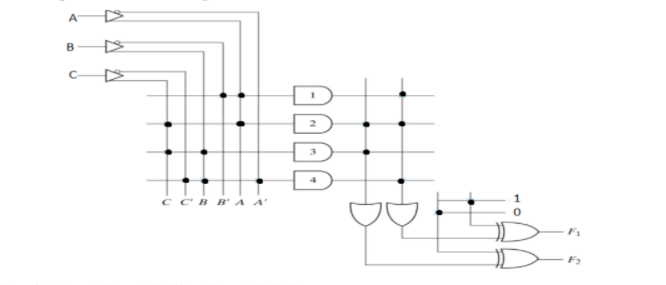
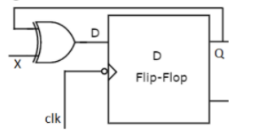
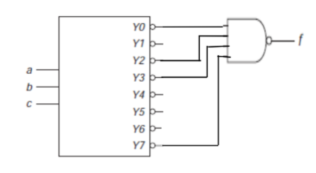

1. The Boolean function F(A, B, C) = Σ(3, 4,6,7) is equivalent to a. AB+BC'+AC b. A'B+BC+AC c. AB+BC+AC' d. AB+BC'+AC'
2. How many two input AND gates and two input OR gates are required to realize the expression Y = BD+CE+AB a. 1,1 b. 4,2 c. 3,2 d. 2,3
3. Binary equivalent of (45.312)8 is a. (100101.011001010)2 b. (000100.011001111)2 c. (1000111.01111010)2 d. (100101.011110010)2
4. When the transition of the circuit from one state to the next state, occurs at discrete instants of time controlled by a clock, then the machine is termed as a. Combinational logic Circuit b. Synchronous sequential machine c. Asynchronous sequential machine d. None
5. Decimal equivalent of the single-precision floating point number (11000000101000...00) is a. -5.05 b. -5.02 c. -5.0 d. -5.1
6. The value in Hexadecimal form of (18.675)10 is a. (12.8) 16 b. (12.ACCC)16 c. (12.8888)16 d. (12.CCCA)16
7. In the CMOS inverter, when the input is in logic 1, then a. nMOS will be OFF b. nMOS will be ON c. pMOS will be ON d. None
8. A J-K flip-flop with J = 1 and K = 1 has a 20 kHz clock input. The Q output is a. Constantly LOW b. Constantly HIGH c. A 20 kHz square wave d. A 10 kHz square wave
9. The logic expression for F(a,b,c) = E(1,2,6,7) is a. a'b'c +a'bc' + abc' + abc b. ab'c +a'bc' + abc' + abc c. a'bc +a'bc + ab'c' + ab'c d. abc +a'bc + abc + a'b'c'
10. The following bit pattern represents a 32 bit floating point number in IEEE 754 single precision format:1 10000011 10100000...00 The value of the number in decimal form is a. -10 b. -13 c. -26 d. None of these
11. To implement the multiplication of two 2-bit numbers, the following circuit components are required. a. Two AND gates and two full Adders b. Two full Adders and two AND gates c. Four AND gates and two HALF Adders d. Three AND gates and two HALF Adders
12. The circuit which changes from serial data to parallel data is a. COUNTER b. MULTIPLEXER c. DEMULTIPLEXER d. FLIP-FLOP
13. The output of a JK flip-flop with asynchronous preset and clear inputs is ‘1’. The output can be changed to ‘0’ with one of the following conditions. a. By applying J = 0, K = 0 and using a clock. b. By applying J = 1, K = 1 and using a clock. c. By applying J = 1, K = 0 and using a clock. d. By applying a synchronous preset input.
14. Moore’s law states that: a. The cost of semiconductor tools doubles every four years b. The cost of semiconductor tools doubles every two years c. The number of transistors on a chip double annually d. The number of transistors on a chip double annually
15. The number (762)10 would be represented in 8421 code or BCD code as a. (0010 0110 0111) b. (111 110 010) c. (0111 0110 0010) d. (1000 0100 0010)
16. Synthesis is a process used to ___________. a. Convert behavioral level description to structural level netlist b. Convert structural level netlist to behavioral level description c. Apply stimulus to the design under test d. Convert behavioral description to layout
17. Which of the following statement is TRUE? a. SRAM is a non-volatile memory b. EPROM is a volatile memory c. DRAM is a non-volatile memory d. EPROM is a non-volatile memory
18. Which of the following ADC is more expensive to build? a. Dual slope ADC b. Successive approximation ADC c. Flash type ADC d. None of the above
19. Which of the following statement is correct? a. Mealy machine output depends on input only b. Mealy machine output depends on input and current state c. Moore machine output depends on input only d. Moore machine output depends on input and current state
20. What are the outputs of the following circuit?
a. F1 = (AB’ + AC + A’BC’)’ , F2 = AC+BC b. F1 = (AC’ + AB + ABC’)’, F2 = AC+BC c. F1 = (AB’ + AC + AB’C’)’, F2 = (AC+BC)’ d. F1 = AB’ + AC + ABC’, F2 = (AC+BC)’
21. Which of the following condition avoid the aliasing effect in ADCs? a. Use the sampling frequency equal to maximum frequency present in the signal b. Use the sampling frequency more than twice the maximum frequency present in the signal c. Use the sampling frequency less than the maximum frequency present in the signal d. No restriction on sampling frequency
22. When is a flip-flop said to be transparent? a. When the Q output is opposite the input b. When the Q output follows the input c. When you can see through the IC packaging d. When the Q output is complementary of the input
23. Which of the following statement is TRUE? a. Microprocessor contains memory to store program and data b. Microcontroller does not have any on-chip memory c. Microcontroller contains memory to store program and data d. Microprocessor contains memory to store program
24. Identify the operation of following circuit.
a. D flip-flop b. T flip-flop c. SR flip-flop d. JK flip-flop
25. Which of the following is used to identify the peripheral device or memory location? a. Control Bus b. Data Bus c. Address Bus d. Register Bus
26. What is the content of accumulator after the following program is executed? MVI A, 12h RLC RLC HLT a. Content of accumulator is multiplied by 4 b. Content of accumulator is multiplied by 2 c. Content of accumulator is divided by 8 d. Content of accumulator is divided by 4
27. How many T states required for longest instruction in 8085? a. 18 b. 17 c. 16 d. 15
28. The 3 to 8 decoder is used to implement the function f. The expression for f is
a. f(a,b,c) = Em(1, 4, 5, 6) b. f(a,b,c) = Em(0, 2, 3, 7) c. f(a, b, c)= Em(1, 4, 6, 7) d. f(a,b,c) = Em(0, 1, 3, 6)
29. What is the size of hamming code for 16 bit data word? a. 17 bits b. 18 bits c. 20 bits d. 21 bits
30. Why the higher order address bus and data bus are multiplexed? a. To reduce the number of pins b. To improve the instruction execution speed c. To reduce the instruction set size d. To improve the clock frequency